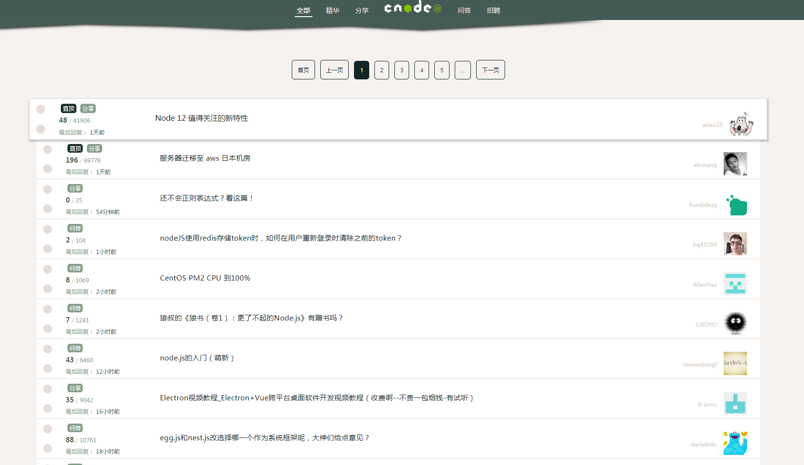
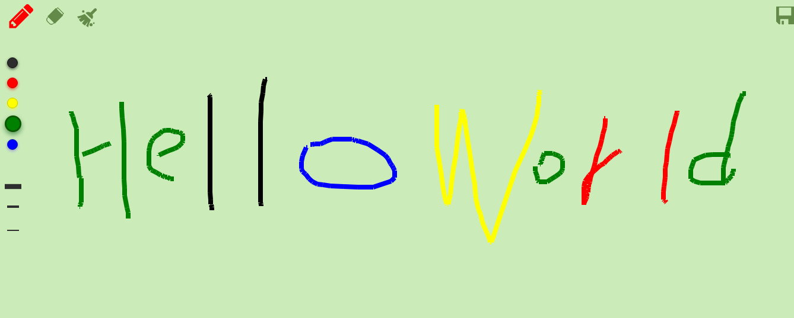
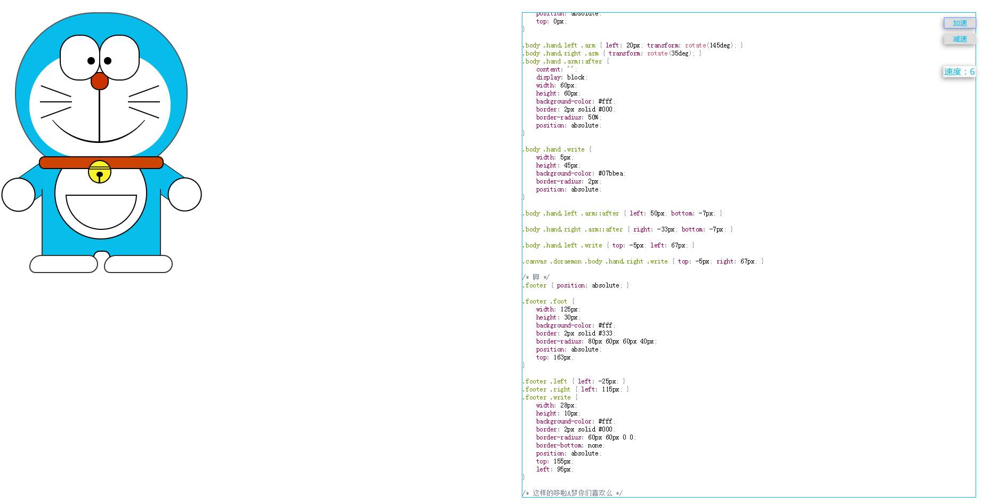

- Skill. 技能清单
小程序制作 ★★
可以独立进行小程序开发，熟悉相关API或组件的使用。
Vue ★★★★
熟悉 Vue 常用功能，如组件、Vue-Router、双向绑定等
HTML 5 & CSS 3 ★★★★★
能独立制作精美网页，掌握 CSS 3 动画、过渡效果、响应式等常用技术
jQuery ★★★★★
熟悉 jQuery 的常用 API，能使用 jQuery 制作网站、轮播、Tab 组件等。
移动端页面 ★★★★
会使用 REM、vw/vh、FastClick 等技术制作适配手机设备的页面。
其他语言 ★★
熟悉 Koa, Express, MongoDB, Mysql，php 能搭建简单的后端项目
- Experience. 项目经验
个人项目
cNode社区 Demo SourceCode
该项目使用Vue构造node中文社区，项目利用cNode官方社区提供的api，以Vue-cli创建项目模板，使用Axios获取数据，使用Vue Router进行前端路由的切换及传参，使用watch监听路由的变化，使用Webpack打包
技术栈：Vue-cli/Vue2/Vue Router/Axios/ES6/Npm/scss在线画板 Demo SourceCode
是一个使用纯原生JS开发的，主要利用HTML5的Canvas,是我在学习原生JS及Canvas过程中开发的小工具，其可以提供在PC端和移动端在线画画、画笔调色、画笔调粗细擦除等功能，并支持画作下载。
哆啦A梦 Demo SourceCode
在做这个案例的时候学习到了很多CSS3的概念，最难的要数嘴唇和嘴唇两边的类似半圆形， 其中需要曲线、半圆、倾斜、遮盖来完成。其中最难处理的是曲线，解决了曲线问题后，就比较顺利的完成了后续的画。
Blog系统 SourceCode
最近用来练手Nodejs的项目，基于Node.js和MongoDB 搭建的 前后端分离 + RESTful API + SSR 的博客系统，并且进行了性能优化，加快首屏渲染速度。
实习经历
江苏科茂信息技术有限公司
在导师的公司，主要做前端方面的实现需求，解决bug等工作。
技术需求上，改造过内部的一个手机号验证组件，实现了多实例，状态保存等功能，在代码层面也做了优化，减少$的使用，重复运行的代码抽离出来等等。
业务需求上，在做官网轮播图需求的时候，把旧的代码封装成内部组件，并且可以绑定多个实例，实现代码的复用。
在解决bug的过程中，也积累了不少经验，比如有ie下的background：rgba兼容性问题，通过google用filter解决的。
微信公众号的开发（漫步社区，漫步校园，52智能宝，镇江物业），让学会了很多东西。
一开始我写了一堆if-else，数据跟表单一一对应，后来发现这样做代码量很大，而且不够灵活。后来重新安排数据结构，用label作为key值，前端表单label作为value值，通过模板引擎跟后端对应起来，这样既大大减少了代码量，也提高了灵活性。在开发的过程中，我会思考怎么实现是最好的，团队的产品也教会了我认真做好每一个细节。在科茂的人生第一次职场之旅，挺好的。
学术成果
论文《基于GRNN神经网络算法的种植溯源测控系统的设计》
本科期间在学生会创新创业服务部担任干事到部长，带领部员开展一系列有益于学生的活动。
在班级担任体育委员，积极带动班级参加院系组织的体育活动，在班级杯比赛中取得良好名次。